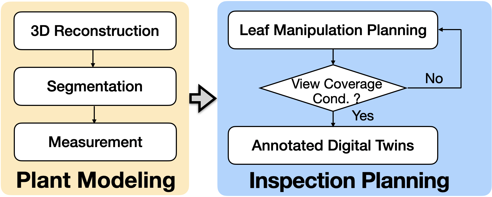
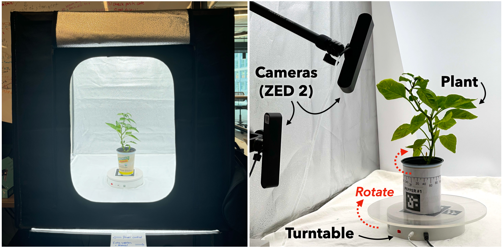

Botany-Bot: Digital Twin Monitoring of Occluded and Underleaf Plant Structures with Gaussian Splats
1UC Berkeley
2Siemens Research Lab, Berkeley
IROS 2025


TL;DR: Botany-Bot uses Gaussian Splatting and Garfield to create a segmented 3D reconstruction of plants and then uses this to guide a robot's interaction with the plant to reveal even more information.
Abstract
Commercial plant phenotyping systems using fixed cameras cannot perceive many plant details due to leaf occlusion. In this paper, we present Botany-Bot, a system for building detailed “annotated digital twins” of living plants using two stereo cameras, a digital turntable inside a lightbox, an industrial robot arm, and 3D segmentated Gaussian Splat models. We also present robot algorithms for manipulating leaves to take high-resolution indexable images of occluded details such as stem buds and the underside/topside of leaves. Results from experiments suggest that Botany-Bot can segment leaves with 90.8% accuracy, detect leaves with 86.2% accuracy, lift/push leaves with 77.9% accuracy, and take detailed overside/underside images with 77.3% accuracy.
Full Pipeline
Botany-Bot allows you to obtain a 3D model of plants from a scan and then use a robot arm to manipulate the plant's leaves to obtain more information than the 3D model currently provides.

Plant Modeling
Botany-Bot uses a light box, two fixed cameras and a digital turntable to obtain a plant scan. To obtain multi-view camera poses we place an ArUco marker on the turntable and calibrate the camera-to-turntable pose for angles through which the turntable moves. Next, we place the plant on top of the turntable and repeat the same angles, which results in a multi-view posed capture. We utilize two ZED 2Stereo cameras oriented vertically, for a total of 4 angles of elevation, and rotate the turntable to evenly spaced radial angles. Every plant also has an ArUco marker which we use to save a relative pose between the plant and the turntable by calculating the relative pose between the camera- to-turntable pose and the camera-to-plant pose.
3D Plant Reconstruction and Segmentation
The rotating turntable multiview capture breaks the core fundamental assumption in NeRF and 3DGS that the scene remain static during capture in two ways: 1) the background around the object is static relative to the camera, and 2) lighting on the surface of the object is not 3D-consistent. To alleviate 1), we preprocess input data by automatically masking the potted plant with Segment Anything 2 (SAM 2). During radiance field construction, we do not compute standard loss functions on pixels lying outside this mask. We implement an extra L1 loss between the potted plant’s mask and accumulation in the gaussian splatting reconstruction which allows us to delete spurious geometry in the scene. We refer to this loss as an alpha loss. We use GARField, for segmenting the various parts of the plants. See below the Gaussian splatting reconstruction for the plants and click parts to see the resultant segmentation.
These 3D segmented reconstructions are rendered in-browser! If you think that's cool, check out Viser!
Inspection Planning
Certain plant regions like leaf undersides, can be under-reconstructed in teh resulting 3D reconstruction while being crucial for detecting issues such as pest infestations or diseases. To
address this, Botany-Bot uses robot interaction with a custom
end-effector to lift/push down each leaf toward a static
camera, capturing high-resolution underside/overside images.
To achieve this we have three task primitives for manipulating a target leaf using the robot arm with its inspection tool and turntable:
- Rotation Alignment:The target leaf is rotated through the rotation of the turntable by θ such that its principal axis (i.e. the stem direction for the leaf) qi is aligned to the high resolution camera z-axis within a small margin ϵ and the leaf center is on the camera z-axis. We denote the turntable rotation set that satisfies the alignment condition to be Arotate ⊂ SO(2)
- Tool Positioning: The inspection tool is moved directly above or underneath the leaf center to position it for lifting/pushing. This step ensures that the tool’s position p aligns with the leaf center in the horizontal plane: xprepare = (xi , yi , ztinitial ) where ztinitial is the initial height of the tool. The tool also needs to be parallel to the the leaf surface. We denote the inspection tool pose set that the tool positioning satisfies Aprepare ⊂ SE(3).
- Manipulation: The inspection tool moves upward/down- ward while simultaneously rotating to lift/push down the leaf. The upward motion follows: xlift = (xi , yi , ztfinal ) where ztfinal > ztinitial while the downward motion follows: xpush = (xi , yi , ztfinal ) where ztfinal < ztinitial . Simultaneously, the inspection tool rotates by an angle ϕ, applied as: Rlift/push ⊂ SO(3) so that the leaf is lifted/pushed down in a controlled manner. The inspection tool pose set Alift/push ⊂ SE(3) satisfies the lifting/pushing condition.
Leaf Lifting/Pushing
Experiments
We evaluate the following three metrics for 3D reconstruction:
- Ratio of leaves correctly segmented on each plant
- Ratio of leaves successfully detected per plant
- Physical accuracy of leaf area and leaf height on a select subset of leaves measured against ground-truth
and these two metrics for autonomous robot leaf inspection:
- Number of leaves autonomously lifted by robot
- Undersides of leaves fully revealed to high-res camera
Limitations and Failures
Across 68 safely accessible leaves across 8 plants, the robot can successfully lift/push 53 leaves. Where the leaf is not sufficiently aligned with the camera, we mark this as a failure even if the lift/push motion is executed correctly. In one notable case (Croton), the robot successfully pushes down a leaf but the leaf is broken. We do not include this leaf among the considered results. Besides breakage, for lifting/pushing, there are three main failure cases:
- Leaf obstructions
- Plant dynamics
- Pose error
A robot may fail to interact with a leaf properly if the gripper accidentally catches on a lower leaf during its motion, bends the stem, and causes the leaf to rotate out of the way. Also, even if the robot made proper contact with the leaf initially, the leaf may slip out of the way depending on how it is connected to the stem. Any pose registration error will only exacerbate these problems. Solving this would require some form of visual closed-loop servoing to detect any errors.
Out of the 53 leaves that were pushed/lifted, their over- sides/undersides are visible in 41 cases. For observing leaf oversides/undersides, the biggest challenges are singulating the leaf and choosing the correct distance to lift/push down the leaf. Most failure cases (6/12) are due to a nearby leaf that gets lifted up/pushed down, and blocks the underside of the target leaf from the camera view. Collision-free, contact-aware motion planning with the 3D plant model would be required to “burrow” between leaves carefully. Another failure mode (5/12) is the leaf being lifted/pushed but not enough to expose its underside/overside. This is because the leaf lift/push distance selection is a naive implementation; the lift/push distance should depend on the leaf’s position in the camera image center, as the leaves lower on the camera perspective should be lifted up a larger amount while leaves higher on the camera perspective should be pushed up a larger amount. Another solution could be to implement a closed-loop motion that takes a image just before losing leaf contact. Lastly, we notice that the gripper did not always orient parallel to the leaf surface. Improving the plant-specific tuning of this parameter could help fix this.
Citation
If you use this work or find it helpful, please consider citing: (bibtex)
@inproceedings{adebola2025botanybot,
title={Botany-Bot: Digital Twin Monitoring of Occluded and Underleaf Plant Structures with Gaussian Splats},
author={Simeon Adebola and Chung Min Kim `and Justin Kerr and Shuangyu Xie and Prithvi Akella and Jose Luis Susa Rincon and Eugen Solowjow and Ken Goldberg},
booktitle={2025 IEEE/RSJ International Conference on Intelligent Robots and Systems (IROS)},
year={2025},
}